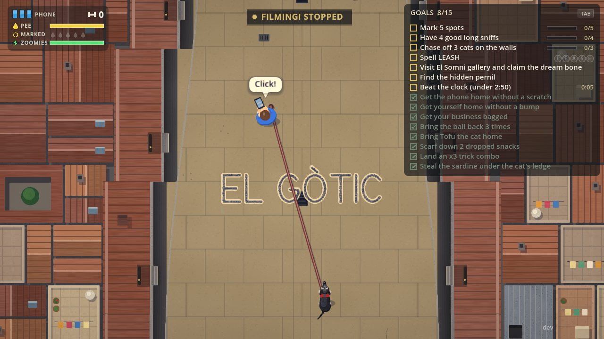
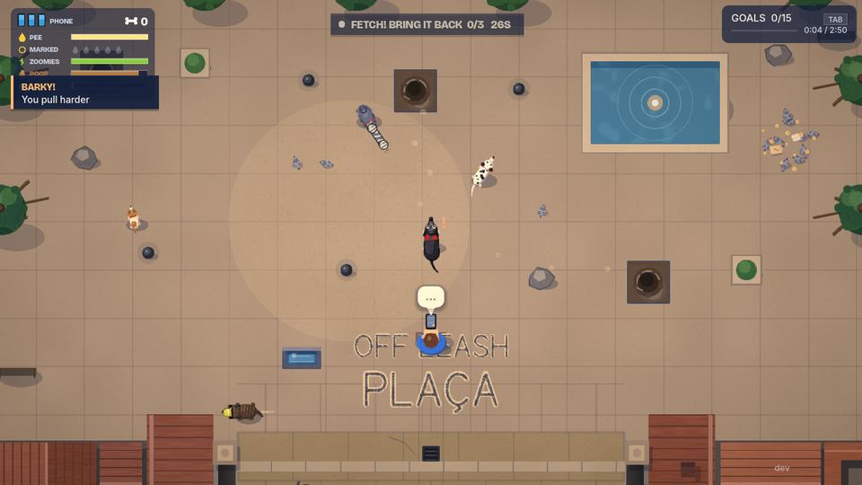

The old town alleys
Narrow medieval setts in the Gothic Quarter, stone bridges overhead, laundry strung between balconies and cats sunning themselves on masonry ledges. Tight stone corners make wrapping the leash around a bollard part of getting round the next bend.

